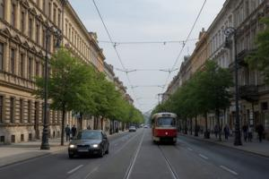
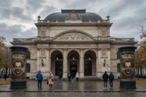
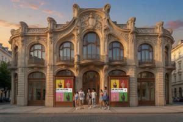
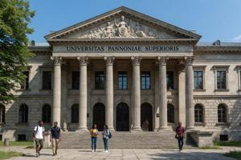

Второй округ Вроновицы
{kind=link}

Второй округ (Vtory okrug) Северной Вроновицы считается лучшей частью города. Административно он целиком относится к Нейтральной зоне.
Исторический обзор
Центральная ось округа — проспект Эньо Жлутоводого, в обиходе называемый Мэйн-стрит. Название придумали солдаты FUPFOR, не сумевшие выговорить настоящее имя проспекта, и с тех пор оно прижилось у вроновчан на всех языках города. Проспект — главный городской отрезок дороги на Будапешт — в габсбургскую эпоху считался самым престижным в городе и назывался проспектом короля Франца Иосифа (венг. Ferenc József király út). В прилегающих кварталах селились местная знать и богатейшие купеческие семьи.
При Первой республике округ был главным очагом промадьярских настроений в городе: на плебисците 1920 года около семидесяти процентов местных жителей проголосовало за унию с Венгрией. Округ был оплотом мадьяронов и консервативной оппозиции — сначала против республики, а затем против дрогановской монархии. Верховный главнокомандующий Гловач, опиравшийся на население Третьего округа, сделал главной церемониальной магистралью тамошний Славянский проспект (Slavjanska jezda).
Коммунисты, пришедшие к власти в 1945 году, воспринимали жителей округа как потенциальных коллаборационистов. Аресты, конфискации и выселения уничтожили прежнюю элиту: в её квартиры вселяли партийных функционеров, офицеров НООН и армии. Одна привилегированная группа сменила другую — и, как оказалось, надолго. Округ сохранил свой элитарный характер, а включение в Нейтральную зону только закрепило его. Жилые кварталы, прилегающие к проспекту, сохранили свой архитектурный облик: доходные дома и особняки конца XIX — начала XX века.
Топография
Главные здания и достопримечательности проспекта Эньо Жлутоводого — от одноимённой площади на северо-восток:
Городская администрация (Kosturska naprava). Здание построено в 1890-х годах в неоренессансном стиле и уже при Габсбургах служило резиденцией муниципальных органов управления. С 1995 года в нём размещается Управление городского хозяйства, назначаемое Верховным комиссаром ООН.
{kind=link}

На Театральной площади (Divadlov Trug) стоят два старейших и самых прославленных театра города. Оперный театр построен в 1881 году по образцу венской Штаатсопер. Национальный театр (Drjezsavno Divadlo) — при Габсбургах Королевский театр — занимает более старое здание 1878 года в итальянском стиле. Его репертуар исторически был разнообразнее, чем у Оперного театра. При социализме здесь разместился Государственный театр № 1. Сегодня это самая активная театральная площадка Нейтральной зоны.
Музей истории и искусства (Muzeum historyi i umjetnosczi) стоит чуть дальше на северо-восток, в специально построенном необарочном здании 1886 года. Здесь хранятся главные памятники паннонского культурного наследия до XX века. Исторический раздел состоит из Зала османской оккупации, Зала австрийской оккупации, Зала венгерской оккупации и Зала советской оккупации.
Биржа (Burza) построена в 1890 году в неоклассическом стиле; торги здесь прекратились после национализации 1946 года. При социализме здание отдали под Народный клуб (Narodny Zbor) — площадку для лекций, концертов и одобренных властью спектаклей. С 1990 года здание пустует; в 2003 году на средства ООН началась его реставрация.
Пассаж Зедельмайера (Sedelmajerov passazs) построен в 1903 году по проекту архитектора Яна Хофмана на средства мецената и текстильного фабриканта Морица Зедельмайера. Это было первое в городе здание, специально предназначенное для магазинов — четырёхэтажная аркада торговых галерей под стеклянной крышей, образцовый памятник местного сецессиона. В 1946 году пассаж национализировали и переименовали в «Универсальный магазин № 1», в 1974 году признали охраняемым памятником, а в 1997–2003 годах отреставрировали. Сейчас здесь работает бутик-галерея для интернациональной и состоятельной клиентуры Нейтральной зоны.
{kind=link}

Галерея современного искусства (Galerya sudjennoj umjetnosczi) размещается в здании 1910 года в стиле сецессион, тоже построенном на средства Зедельмайера. Здесь хранится главное собрание паннонской живописи и скульптуры XX века, включая крупнейшую коллекцию произведений межвоенного авангарда.
{kind=link}

Верхнепаннонский университет, в обиходе — Старый университет (Stary Unyversytet), стоит восточнее проспекта, на Университетской улице (Unyversytecka ulica). Основан в 1725 году как иезуитский коллеж, в 1774 году при Марии Терезии преобразован в Академию наук, а в 1876 году получил от Франца Иосифа статус университета. Первое столетие преподавание велось исключительно на латыни; венгерский язык неохотно добавили в программу после 1867 года. Вплоть до конца габсбургской эпохи университет оставался оплотом консерватизма и католической ортодоксии. При Первой республике его государственным указом подчинили Новому университету и основательно реорганизовали. В 1991 году университет закрыли на фоне ожесточённых згуро-деглянских студенческих споров. В 1996 году он вновь открылся как независимое учреждение под управлением Наблюдательной миссии ООН по Бывшей Верхней Паннонии (ЮНОМФУП), где этническое разнообразие обеспечивается обязательными смешанными згуро-деглянскими группами. Из-за этой политики паннонские студенты в основном его бойкотируют — кроме самых прогрессивных. Символическая плата за обучение и остаточный европейский престиж привлекают сюда студентов в основном из африканских стран. Преподавание ведётся на английском.
Категории: Вроновица, Округа Вроновицы